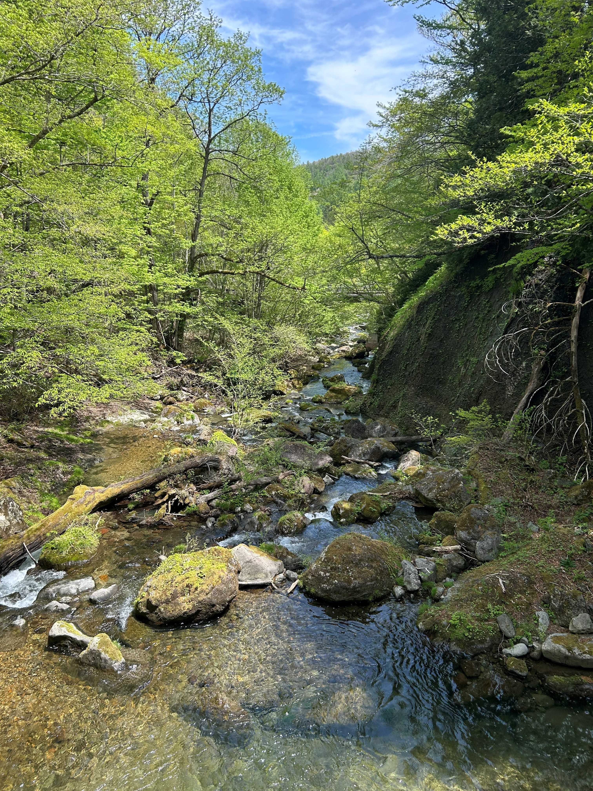
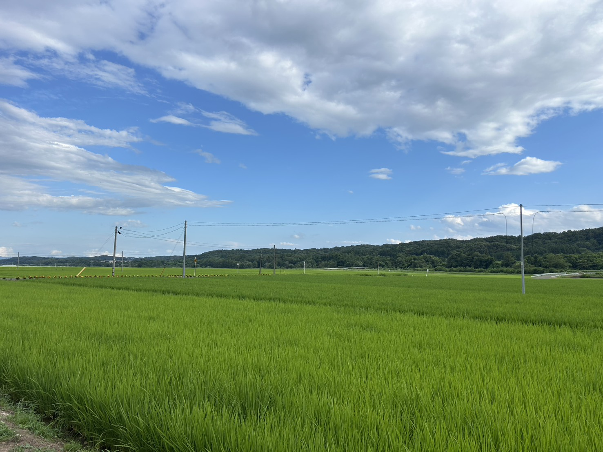

SOFT FARM
大地の味を、届けに。
ABOUT FARM

ソフトファームは、山から注ぐ清らかな水と、豊かな土に恵まれたこの地で、三つの顔をもつ農家です。
日本酒の蔵元に届ける 酒米。家庭の食卓を支える 食用米。季節を一皿に運ぶ 野菜。それぞれに違う作法があり、違う難しさがあり、違うよろこびがあります。
ただ、三つに共通するのはひとつ。「食べる人の一日に、まっすぐ届ける」ということ。それを忘れずに、私たちは田んぼに立ち、畑に立っています。

PHILOSOPHY
効率や見てくれよりも、その年の土が何を欲しがっているかを聴く。
先祖から受け継いだ田畑に、私たちはただの「管理者」として立っています。
いつか次の世代に手渡すとき、今よりも豊かな土であるように。急がず、まっすぐ、ひと作ずつ。
FARM CALENDAR
苗床の準備、野菜の種まき。長い冬を越えた土を、ていねいに起こす季節です。
酒米・食用米の田植えがピークを迎え、野菜は初物の収穫が始まります。
稲が育ち、畑の夏野菜が次々と実る時期。水と虫との対話が続きます。
稲刈りと秋野菜。ファームがもっとも賑わう、ご褒美のような季節。
乾燥・選別・出荷作業。根菜の収穫も続きます。蔵元への出荷もこの時期。
農具の手入れ、来期の計画、土づくり。見えないところで来年の味が決まります。
CONTACT
お取引のご相談、産地見学、取材のご依頼などお気軽にどうぞ。
商品ごとのご質問は、各事業ページからもご連絡いただけます。